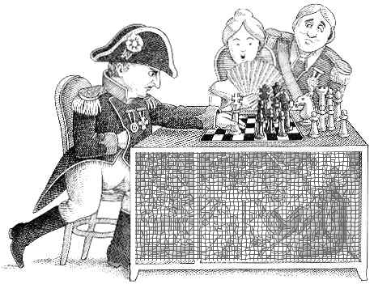
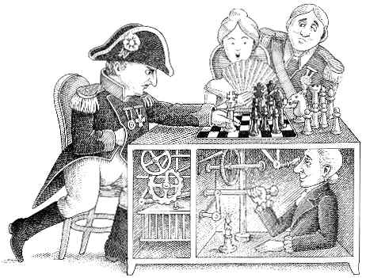
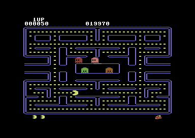
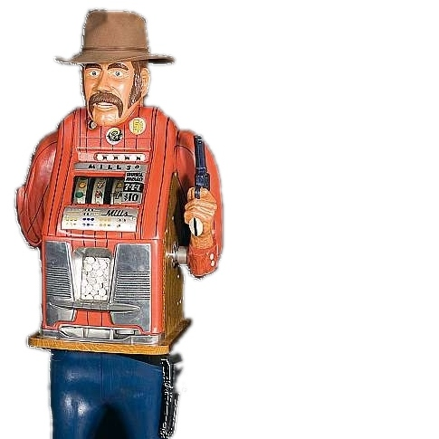
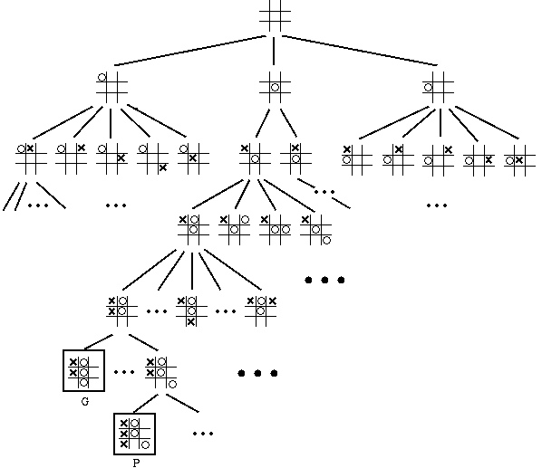
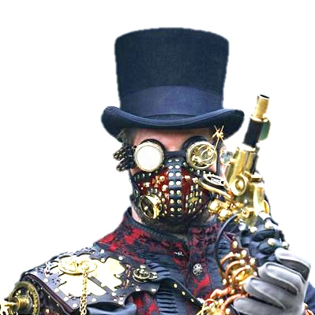
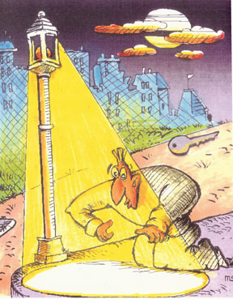

הסק-על רציונלי — ּRational Metareasoning
דוד טולפין
המחלקה למדעי המחשב
אוניברסיטת בן גוריון בנגב
בינה מלאכותית
- בעיות קשות 
- שבמקרים רבים ניתן לפתור ... 
- בעזרת היוריסטיקות
[any material that should appear in print but not on the slide]
היוריסטיקות

[any material that should appear in print but not on the slide]
היוריסטיקות
ולא לקרוב |
ולא ליקר |

[any material that should appear in print but not on the slide]
תכונות של היוריסטיקות
- יעילות: עד כמה היוריסטיקה משפרת ביצועים של האלגוריתם?
- סיבוכיות: כמה זמן לוקח לחשב את היוריסטיקה
- כלליות: האם היוריסטיקה עובדת טוב במקרים שונים רבים, או שמיועדת רק לסוג מופעים מסוים?
[any material that should appear in print but not on the slide]
Metareasoning — Russell, Wefald: 1991
החלטות-על
- האם כדאי לחשב היוריסטיקה?
- איזו היוריסטיקה עדיפה?
ערך מידע
- נבחר בהיוריסטיקה עם ערך מידע מקסימלי.
- נחשב אותה רק אם הרווח הצפוי עולה על מחיר החישוב...
- ... אחרת נבחר בפעולה\כיוון עם תועלת מקסימלית.
[any material that should appear in print but not on the slide]
בעית בחירה
[any material that should appear in print but not on the slide]
בנדיט מרובה ידיים

- כשמושכים בזרוע, מקבלים כסף
- רווח מצטבר — כיצד לצבור הכי הרבה כסף?
- רווח פשוט — כיצד למצוא את הזרוע הטובה ביותר?
[any material that should appear in print but not on the slide]
חיפוש מונטה קרלו בעצים

[any material that should appear in print but not on the slide]
דגימה אקראית
[any material that should appear in print but not on the slide]
משחק Go
[any material that should appear in print but not on the slide]
הכרה בין־לאומית
- David Tolpin, Solomon Eyal Shimony: Rational Deployment of CSP Heuristics. IJCAI 2011: 680-686
- David Tolpin, Solomon Eyal Shimony. Semimyopic measurement selection for optimization under uncertainty. IEEE Transactions on Systems, Man, and Cybernetics, Part B, 42(2):565–579, 2012
- David Tolpin, Solomon Eyal Shimony. MCTS Based on Simple Regret.AAAI-2012. To appear.
- David Tolpin, Solomon Eyal Shimony. VOI-aware MCTS. ECAI-2012. To appear.
- Nicholas Hay, Stuart Russell, Solomon Eyal Shimony, David Tolpin. Selecting Computations: Theory and Applications. UAI-2012. To appear.
[any material that should appear in print but not on the slide]
אתגרים לעתיד
|
הסק־על במחקר  |
הארנק לא תמיד נאבד מתחת לפנס  |
[any material that should appear in print but not on the slide]
סוף דבר
הצטרפו אלינו!
[any material that should appear in print but not on the slide]